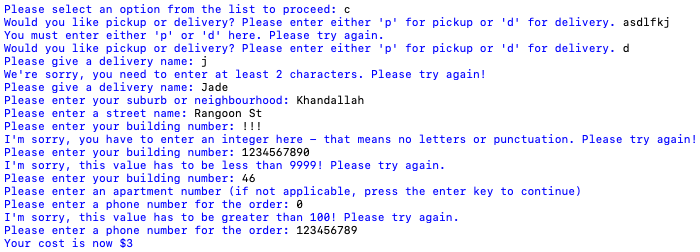
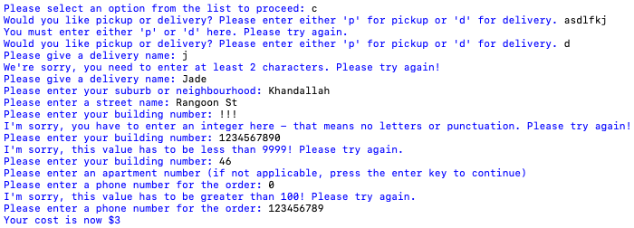

Brief
This is a program where a worker at a pizza company may enter orders received over the phone into a computer system. This system will store a customer's name, address, and order information, and use this to calculate a price total and print a receipt.
Below is the initial project backlog:

Sprint One
Aim
This is the first sprint of the program - this aims to add a simple pizza menu, and have the start of a main function that welcomes the user and prints that menu.


Reflection
This version has a simple menu that I can work with during the early stages of this project, as well as the beginning to the main loop that will allow the program to run; these elements all work as expected, which can be seen by the screenshot of the outcomes in the testing. Next steps will be to allow the program operator to enter their choice of the pizza, which must be stored by the program.
Sprint Two
Aim
In this sprint I am implementing the start of the "order" function. The menu will be printed, and the user is asked to enter the pizza they would like, along with a quantity and order comments. An order_list will also be created, which the information the user enters will be added to.

Reflection
The program now takes a user's order and stores it in the system, and is able to recall it later
when asking for the user's confirmation. As I was writing the code in this sprint, it occurred to me
that I hadn't actually planned to include an option where the operator could edit the order after
initially entering it. This would mean the program is very inflexible and the operator would have to
start again from scratch if he made a mistake. Therefore, I have updated the project backlog and
plan to create another function that allows the user to edit the order. I probably won't implement
this in the next sprint, but will instead wait until the receipt and delivery/pickup functions
have been added - as it is more of an embellishment than an essential function of the program.
In the next version, I want to add a function where where the operator asks whether the customer
wants their food delivered to their home address or not, then asks for and processes the relevant
personal information (e.g. name, address, phone number, delivery charge).
There are a few problems with this version - the formatting on the printed lists is not as clean
as it could be, and of course it still can't cope with any kind of unexpected input. I plan to
address all of these minor issues when I have finished writing the main code.
Sprint Three
Aim
This sprint aims to add a "get_customer_info" function that will find out if the order is for pickup or delivery, and ask for customer information based on that (name, address, etc.) and adds a delivery charge if appropriate.


Reflection
The program now allows the user to tell it whether they would like their order to be
delivered, or if the customer will pick it up from the pizza store themselves. The program then
takes the customer's personal information based on this, and adds a $3 delivery charge where
appropriate.
In the next sprint I want to restructure the code - I would like the program to be based around a
"menu" of options from which the user can decide what to do with their order. This will be done in the
next sprint. I believe
this will allow for greater flexibility within the program, so the user has more control. It will also
make it easier to edit user orders, a functionality which will be implemented in my next sprint.
Sprint Four
Aim
This sprint aims to restructure the program by making all of the code run from a central options menu which the user interacts with. It will also add basic input validation to help accommodate user mistakes and prevent the program from crashing so easily. Finally, it will allow the user to view their receipt and edit what they have ordered.

 

Reflection
In this sprint, I completely restructured my code so that it was centred around a central menu,
from which the user can make requests. This means that the program is more predictable and easier
for a first-time user to navigate. I also added in several new functions, including two
functions for validating user input to prevent crashes, and greatly altered the function for
getting the customer information, so that it detects when the user already has information stored
and allows them to edit it more efficiently. I have split the get_customer_info function into
four separate functions (get_delivery_info, get_pickup_info, and get_address) to make this part of
the process as efficient as possible.
However, the original goal of this sprint has not been completed. I came across problems with the
print_menu functionality early on, which was a major component of my plans for the edit_order
function. I then realised that I was too ambitious with early planning for this sprint and decided
to change my focus to troubleshooting, fixing bugs, implementing simple validation functions, and
updating the edit_customer_info function so that it had a more flexible design, elements of which
I plan to reuse in the edit_order function.
In this program the user is still unable to delete things from the order or view their receipt.
The delay in implementing these functions is due to the problems with the print_menu functions,
which are currently not working. In the next sprint, I will fix this, which should allow me to
implement the previously-planned edit_order function I had intended to add in this sprint.
Once sprint five has been completed, I will be able to start fixing any final bugs and getting the
program ready for completion.
Sprint Five
Aim
In this sprint, I want to have a working print_receipt function. This means that I will need to fix the broken print_menu and print_menu_indices functions, which are currently returning errors when called in several situations and early tests of the print_receipt function. Once this is done I will use this code to implement a very simple confirm_order function.

Errors
In this sprint, my main goal was to implement print_receipt and confirm_order functions. However, these goals could not be accomplished without getting the print_menu and print_menu_indices options to work correctly. I ended up focusing on the print_menu function, which I could not make work with the list I was using to store customer information, resulting in the first screenshot. I eventually made the decision to switch this delivery_info list to a dictionary, which I realised after crashing the program several times (second screenshot) required a whole new approach, so I added a print_dict function specifically to print it in that format.

Reflection
This sprint was successful as far as fulfilling my goals was concerned. I now have working functions
for printing both dictionaries and multi-dimensional lists, and working print_receipt and
confirm_order functions. The extensive testing process after this version also allowed me to identify
several bugs both minor and major, such as the way the user's address was being recorded - many of
the minor bugs have now been fixed.
There are three remaining major flaws in the code. After the progress made in this sprint, it appears
that the total_cost variable does not update according to the information from the add_to_order
loop - something that had worked in previous versions (the error discovered in this version's testing is
pictured above. I am unclear how this happened; however, I will
not be fixing it in this sprint, as I plan on dealing with the cost calculation in a new way altogether
going forward, so it would be a wasted effort.
On top of this, there is a possible exploit where a user could get $3 off their order total by entering
the "edit customer details" menu, and changing their order to "pickup" an unlimited amount of times.
While this could be prevented, it would require writing repetitive code, whereas I believe a better
solution would again be calculating costs through a separate "calculator" function, so that the
total is not constantly passed through arguments and altered by 3-4 different functions. This will
make it much easier to edit code pertaining to it in the future.
The final glitch is shown in the second test image - if a user orders the same kind of pizza
twice, it will not print as, for example, "2 cheese pizzas" but as two sets of "1 cheese pizza".
This will create an inconvenience for the user when I implement the planned "edit_order" function -
therefore, this will have to be fixed in the next sprint, before the edit_order function is added.
Sprint Six
Aim
In this sprint, I am aiming to implement a cost calculation function, and make sure that individual pizza quantities as well as total costs are all adding together directly.


Reflection
The cost calculation and "quantity_adder" function have both now been successfully implemented,
and the goals of this sprint have been completed. I had to trial several different methods, particularly
in order to make my calculator function work, and ended up creating a separate list where all the costs
of all pizza orders were added while the add_to_order function was running, which could then be used to
sum the total price of everything together.
This sprint was successful in fixing the program's biggest remaining barriers to functionality;
therefore, I will be able to add the final planned menu option, with the edit_order function, in the
Sprint Seven.
Sprint Seven
Aim
In this sprint, I want to add an edit_order function that will allow the user to delete items from their pizza order.


Reflection
The edit_order function has now been successfully implemented. This was the final major planned function to be added to the program.
Program goals

Git commit history
Relevant Implications Summary
Future proofing
"Future proofing" means that this program will continue to be flexible and easy to work with well into the future. It means the code is easy to update and expand upon, and easy to understand for any new developer who may potentially come to work on it. To address this, I have tried my best to keep the structure of the program simple and easy to follow. All code runs out of a main function, with a central menu. All functions and variables are sensibly named and the code has been thoroughly commented, so that all of it is explained. This makes it easy to come back to or look at for the first time and understand what's happening.
Functionality
"Functionality" means that the program functions as it should, without crashes or glitches. To address this I have personally tested the program every time I added or altered code, performed a formal test after each sprint, and documented the most important tests on this document. I have also asked other people not familiar with the project to test it for me, which resulted in the discovery of one place where the code crashed that has now been fixed. It is my belief that there are no longer errors or glitches in my code - I have created several functions specifically designed to combat these glitches, which have been well documented throughout the planning process.
Usability
"Usability" means that a program is easy to use to somebody unfamiliar with its workings. That means it is easy to navigate, interact with, and understand. I believe my program complies with this heuristic due to the extensive validation as well as the way it is laid out. The program is predictable, running from a central menu that the user returns to after each completed task. The user is provided with clear instructions and every step. If they do something wrong, a feedback message is printed that clearly explains what they have done wrong and what they must do to fix it. They are also given a chance to fix their own mistakes, and are usually asked to "please try again" after they have entered something the system cannot process. The program also takes advantage of the Python functions .lower(), .upper(), and .title() to make sure the user doesn't have to worry about simple things like capitalising their input. The code has also been tested by somebody unfamiliar with my code who identified typos that have now been removed, as well as giving feedback on the usability; after performing revisions based on his advice I am confident my program provides clear feedback and instructions even for a first-time user, and is free of typos that may interfere with understanding.